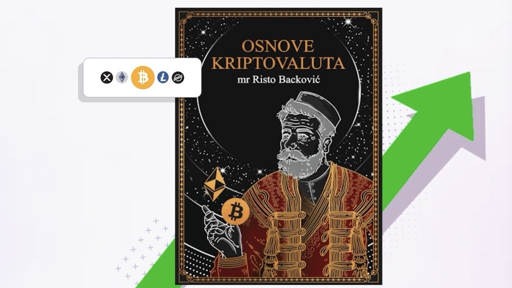
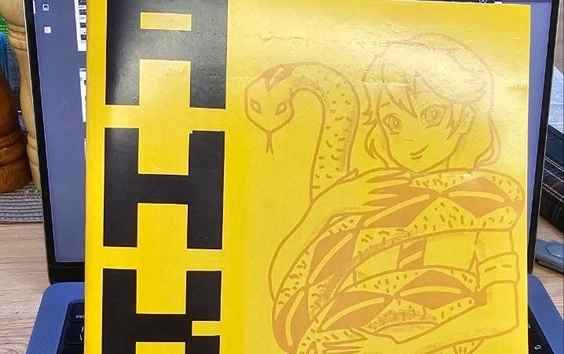

MTL Fest
Support for organizational expenses and speakers.
DetailsWe accept voluntary donations and support projects connected with the Montelibero movement through grants, sponsorships, donations, and, in documented cases, interest-free loans.

Support and scale initiatives that benefit the Montelibero movement through voluntary donations.
Council decisions, recent support records, the charter overview, and the main multisig account are linked publicly.
The Council considers proposals against fund goals. Project administration remains with the proposer or curator, and support is not guaranteed.
Donors transfer accepted Stellar assets to the dedicated donation account.
The Council considers proposals against fund goals and decides whether and how to support them.
Support may be a grant, sponsorship, donation, interest-free loan, or another documented form. Public decision and report references are linked when available.
The fund currently accepts EURMTL, USDM, and SATSMTL on Stellar. The automated wallet routes below are EURMTL-only and continue on external services; this site does not execute or hold the payment.
Choose an amount in your Stellar wallet, open the 10 EURMTL Telegram link, or transfer directly using the address below. Confirm the details in your wallet.
EURMTL only, in whole-number amounts. Submitting the amount opens the external custodial MyMTLWalletBot service in Telegram.
Choose the amount in your wallet. If a wallet does not open, use the donation address.
EURMTL only. Submitting the amount opens an external redirect and then a compatible Stellar wallet.
Choose the amount in your wallet. If a wallet does not open, use the donation address.
For EURMTL, USDM, or SATSMTL, use the Stellar donation address below only after verifying the network, address, and exact asset issuer.
Transfers are irreversible and fees may apply. Verify every detail, then tap and hold or use Ctrl+C to copy.
Inspect the donation account on the block explorerThese assets are named in the current Russian-language fund overview. Before transferring, open the relevant asset reference and verify its issuer. Other forms of donation require prior agreement with the Council.
GACKTN5DAZGWXRWB2WLM6OPBDHAMT6SJNGLJZPQMEZBUR4JUGBX2UK7VThe charter overview explains how the fund may use donations and how earmarked donations are coordinated. The linked overview is in Russian.
Donation actions open external wallet, Telegram, redirect, blockchain-explorer, or wiki services under their own privacy and security policies.
Support for organizational expenses and speakers.
Details
Development of maps and open data for the city of Bar.
Details
Sponsorship of the publication of the book "Fundamentals of Cryptocurrencies" in Montenegrin language.
Details
Translation into Montenegrin and printing of Titus Gebel’s book "Free Private Cities."
Details
Payment for tickets to attend the Liberty in Our Lifetime festival 2023 and 2024.
Details
Interest-free loan for printing the edition of the book about Ancap.
Details
Interest-free loan for the production of Montelibero merchandise.
Details
Support for representatives' trip to LibertyCon in Tbilisi.
Details
Hosting costs for MonteWiki, support donation.
Details
Sponsorship of the libertarian conference in Tbilisi II Liberty Conf.
Details
Donations to support activity.
DetailsAnyone may propose a project or idea, whether or not they participate in Montelibero; proposals may also concern support for an individual.
A proposal must fit the fund goals. If you are unsure, ask the Council bot before preparing it.
Use the Council feedback bot to explain the idea, the support needed, and who will administer it, or to check privately whether it fits the fund goals.
Write to the Council botDiscuss the same proposal in the public Telegram chat to get feedback, find supporters, and refine the idea.
Open the public chatThe proposer or curator remains responsible for project administration. Support and its form are discretionary and are not guaranteed.
The private bot and public chat are external Telegram services. Messages in the public chat are public; Telegram applies its own policies to both destinations.
The fund is governed by its largest active donors. The Council has up to 10 members, and the main account is controlled by multisignature rather than by one person.
Weights in the multisignature are recalculated from recent donations and delegations. Approving transactions and decisions requires a qualified threshold, which keeps the fund collective and transparent.
Inspect the Council-controlled main Stellar account and its public activity on the block explorer.
Open the multisig accountOpen the Russian-language charter overview, which links to the current official text and summarizes fund goals, donor status, Council criteria, and voting rules.
Short answers for people and AI agents that need to understand the fund without guessing.
The Third Fund of Montelibero is a community fund that supports useful initiatives connected with the Montelibero movement through voluntary donations and several documented forms of support.
No. Donations to TFM are voluntary contributions. They are not investments, securities, equity, loans, yield-bearing products, or guaranteed-return instruments.
The two automated routes are EURMTL-only and continue on external services; the site does not execute or hold payment. Direct transfers may use currently accepted Stellar assets. Always verify the network, donation address, and exact asset issuer in a current official source because transfers are irreversible and fees may apply.
Any person may contact the Council through the feedback bot or discuss an idea in the public Telegram chat. The proposer or curator administers the project. The fund may use different documented forms of support, but approval is not guaranteed.
The site links to the public MonteWiki record, recent support references, the charter overview, and the main multisig account used as a public governance reference. Most linked narrative sources are currently in Russian.
Below is a curated set of recent public support decisions. The evidence links currently open Russian-language public sources.